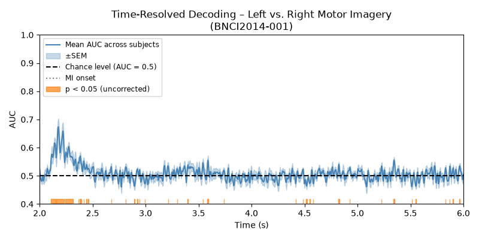
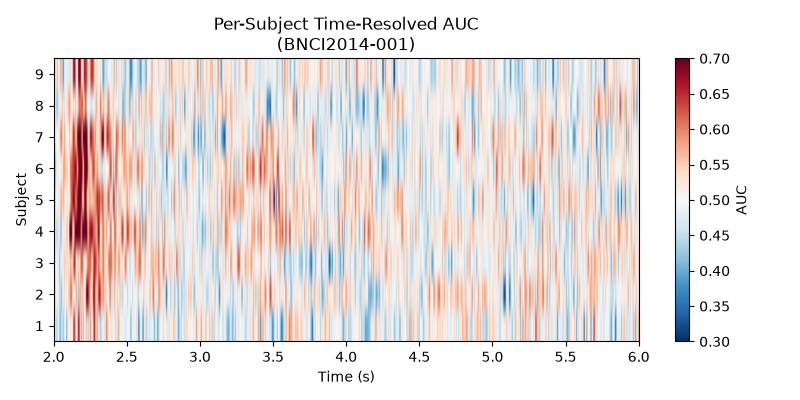

Note
Go to the end to download the full example code.
Time-Resolved Decoding with SlidingEstimator#
This example shows how to perform time-resolved decoding of EEG signals using
mne.decoding.SlidingEstimator. Instead of reducing the entire trial to
a single score, a SlidingEstimator fits an independent classifier at each time
point, revealing when during a trial the neural signal carries information
about the mental state.
This approach is a natural alternative to pseudo-online evaluation (using overlapping windows): rather than simulating an online scenario by slicing the raw signal with a sliding window, we directly assess decoding accuracy at each sample of the already-epoched trial.
We use the BNCI2014-001 motor-imagery dataset (left- vs right-hand) and apply
a logistic-regression classifier wrapped in a SlidingEstimator. For each
subject the score is evaluated via stratified 5-fold cross-validation using
mne.decoding.cross_val_multiscore(), and the results are averaged across
subjects and visualised as a time course.
# Authors: MOABB contributors
#
# License: BSD (3-clause)
# sphinx_gallery_thumbnail_number = 2
import warnings
import matplotlib.pyplot as plt
import numpy as np
from mne.decoding import SlidingEstimator, cross_val_multiscore
from scipy.stats import ttest_1samp
from sklearn.linear_model import LogisticRegression
from sklearn.pipeline import make_pipeline
from sklearn.preprocessing import StandardScaler
import moabb
from moabb.datasets import BNCI2014_001
from moabb.paradigms import LeftRightImagery
moabb.set_log_level("info")
warnings.filterwarnings("ignore")
Loading the Dataset#
We instantiate the BNCI2014-001 dataset and use all 9 subjects.
dataset = BNCI2014_001()
Choosing a Paradigm#
The LeftRightImagery paradigm extracts
left-hand and right-hand motor-imagery epochs, applies a band-pass filter
(8–32 Hz by default), and returns the data as a 3-D NumPy array of shape
(n_trials, n_channels, n_times).
Building a Time-Resolved Pipeline#
A SlidingEstimator wraps any scikit-learn compatible
estimator and fits/scores it independently at every time point.
Here we use a simple logistic-regression classifier with Z-score
normalisation. The scoring='roc_auc' argument tells the estimator to
use AUC as the evaluation metric.
clf = make_pipeline(StandardScaler(), LogisticRegression(max_iter=1000))
sliding = SlidingEstimator(clf, scoring="roc_auc", n_jobs=1)
Evaluating Each Subject#
For each subject we:
Retrieve the preprocessed epochs via the paradigm using
return_epochs=Trueso we can extract the correct time vector and sampling frequency from themne.Epochsmetadata.Run stratified 5-fold cross-validation with
cross_val_multiscore(), which returns an array of shape(n_folds, n_times).Average over folds to obtain a single time course per subject.
All per-subject time courses are collected for later aggregation.
all_scores = []
for subject in dataset.subject_list:
epochs, y, meta = paradigm.get_data(
dataset=dataset, subjects=[subject], return_epochs=True
)
X = epochs.get_data()
# cross_val_multiscore returns (n_folds, n_times)
scores = cross_val_multiscore(sliding, X, y, cv=5, n_jobs=1)
all_scores.append(scores.mean(axis=0)) # average over folds
# Stack into (n_subjects, n_times)
all_scores = np.array(all_scores)
0%| | 0.00/37.2M [00:00<?, ?B/s]
0%| | 8.19k/37.2M [00:00<12:27, 49.7kB/s]
0%| | 56.3k/37.2M [00:00<03:14, 191kB/s]
0%|▏ | 121k/37.2M [00:00<02:11, 281kB/s]
0%|▏ | 176k/37.2M [00:00<02:02, 301kB/s]
1%|▎ | 256k/37.2M [00:00<01:40, 366kB/s]
1%|▎ | 337k/37.2M [00:00<01:30, 407kB/s]
1%|▍ | 424k/37.2M [00:01<01:22, 445kB/s]
1%|▌ | 537k/37.2M [00:01<01:10, 519kB/s]
2%|▋ | 640k/37.2M [00:01<01:06, 551kB/s]
2%|▊ | 824k/37.2M [00:01<00:50, 723kB/s]
3%|█ | 1.01M/37.2M [00:01<00:42, 841kB/s]
3%|█▎ | 1.27M/37.2M [00:01<00:33, 1.07MB/s]
4%|█▌ | 1.55M/37.2M [00:02<00:28, 1.25MB/s]
5%|█▉ | 1.91M/37.2M [00:02<00:23, 1.53MB/s]
6%|██▍ | 2.41M/37.2M [00:02<00:17, 1.96MB/s]
8%|███ | 3.07M/37.2M [00:02<00:13, 2.57MB/s]
10%|███▊ | 3.86M/37.2M [00:02<00:10, 3.22MB/s]
13%|████▉ | 4.92M/37.2M [00:02<00:07, 4.16MB/s]
17%|██████▎ | 6.30M/37.2M [00:03<00:05, 5.41MB/s]
22%|████████ | 8.08M/37.2M [00:03<00:04, 6.99MB/s]
28%|██████████▍ | 10.5M/37.2M [00:03<00:02, 9.32MB/s]
37%|█████████████▋ | 13.7M/37.2M [00:03<00:01, 12.2MB/s]
49%|██████████████████ | 18.1M/37.2M [00:03<00:01, 16.6MB/s]
64%|███████████████████████▋ | 23.8M/37.2M [00:03<00:00, 21.8MB/s]
77%|████████████████████████████▌ | 28.7M/37.2M [00:04<00:00, 27.3MB/s]
87%|████████████████████████████████▏ | 32.4M/37.2M [00:04<00:00, 29.5MB/s]
99%|████████████████████████████████████▋| 36.8M/37.2M [00:04<00:00, 29.4MB/s]
0%| | 0.00/37.2M [00:00<?, ?B/s]
100%|██████████████████████████████████████| 37.2M/37.2M [00:00<00:00, 191GB/s]
0%| | 0.00/41.7M [00:00<?, ?B/s]
0%| | 8.19k/41.7M [00:00<13:30, 51.5kB/s]
0%| | 56.3k/41.7M [00:00<03:30, 198kB/s]
0%| | 96.3k/41.7M [00:00<03:08, 221kB/s]
0%|▏ | 161k/41.7M [00:00<02:22, 293kB/s]
0%|▏ | 201k/41.7M [00:00<02:30, 277kB/s]
1%|▎ | 281k/41.7M [00:00<01:57, 352kB/s]
1%|▎ | 377k/41.7M [00:01<01:35, 433kB/s]
1%|▍ | 488k/41.7M [00:01<01:19, 516kB/s]
1%|▌ | 608k/41.7M [00:01<01:09, 588kB/s]
2%|▋ | 721k/41.7M [00:01<01:05, 623kB/s]
2%|▊ | 841k/41.7M [00:01<01:01, 660kB/s]
2%|▉ | 952k/41.7M [00:01<01:00, 671kB/s]
3%|▉ | 1.06M/41.7M [00:02<00:59, 678kB/s]
3%|█ | 1.18M/41.7M [00:02<00:57, 700kB/s]
3%|█▏ | 1.30M/41.7M [00:02<00:57, 699kB/s]
3%|█▎ | 1.42M/41.7M [00:02<00:56, 713kB/s]
4%|█▍ | 1.61M/41.7M [00:02<00:46, 859kB/s]
4%|█▋ | 1.81M/41.7M [00:02<00:40, 974kB/s]
5%|█▉ | 2.13M/41.7M [00:03<00:30, 1.28MB/s]
6%|██▏ | 2.42M/41.7M [00:03<00:27, 1.45MB/s]
7%|██▌ | 2.91M/41.7M [00:03<00:20, 1.93MB/s]
8%|███ | 3.40M/41.7M [00:03<00:16, 2.26MB/s]
10%|███▋ | 4.17M/41.7M [00:03<00:11, 3.24MB/s]
12%|████▎ | 4.84M/41.7M [00:03<00:09, 3.85MB/s]
14%|█████ | 5.74M/41.7M [00:03<00:07, 4.85MB/s]
16%|█████▉ | 6.70M/41.7M [00:04<00:06, 5.70MB/s]
19%|███████ | 8.03M/41.7M [00:04<00:04, 7.19MB/s]
25%|█████████▏ | 10.3M/41.7M [00:04<00:02, 10.6MB/s]
28%|██████████▍ | 11.8M/41.7M [00:04<00:02, 11.1MB/s]
34%|████████████▌ | 14.1M/41.7M [00:04<00:02, 13.5MB/s]
44%|████████████████▏ | 18.3M/41.7M [00:04<00:01, 19.6MB/s]
54%|███████████████████▉ | 22.4M/41.7M [00:04<00:00, 25.2MB/s]
60%|██████████████████████▏ | 25.0M/41.7M [00:04<00:00, 24.9MB/s]
70%|██████████████████████████ | 29.4M/41.7M [00:04<00:00, 30.0MB/s]
81%|█████████████████████████████▊ | 33.6M/41.7M [00:05<00:00, 30.2MB/s]
91%|█████████████████████████████████▋ | 37.9M/41.7M [00:05<00:00, 33.7MB/s]
0%| | 0.00/41.7M [00:00<?, ?B/s]
100%|██████████████████████████████████████| 41.7M/41.7M [00:00<00:00, 140GB/s]
0%| | 0.00/42.5M [00:00<?, ?B/s]
0%| | 8.19k/42.5M [00:00<13:44, 51.5kB/s]
0%| | 56.3k/42.5M [00:00<03:34, 198kB/s]
0%| | 113k/42.5M [00:00<02:38, 268kB/s]
0%|▏ | 168k/42.5M [00:00<02:21, 298kB/s]
1%|▏ | 224k/42.5M [00:00<02:13, 317kB/s]
1%|▎ | 281k/42.5M [00:00<02:08, 328kB/s]
1%|▎ | 337k/42.5M [00:01<02:05, 336kB/s]
1%|▎ | 392k/42.5M [00:01<02:04, 338kB/s]
1%|▍ | 465k/42.5M [00:01<01:52, 374kB/s]
1%|▍ | 512k/42.5M [00:01<02:00, 349kB/s]
1%|▌ | 616k/42.5M [00:01<01:34, 441kB/s]
2%|▋ | 736k/42.5M [00:01<01:18, 534kB/s]
2%|▊ | 856k/42.5M [00:02<01:09, 598kB/s]
2%|▉ | 1.05M/42.5M [00:02<00:53, 780kB/s]
3%|█ | 1.24M/42.5M [00:02<00:45, 904kB/s]
4%|█▎ | 1.50M/42.5M [00:02<00:36, 1.13MB/s]
4%|█▌ | 1.78M/42.5M [00:02<00:31, 1.30MB/s]
5%|█▉ | 2.18M/42.5M [00:02<00:24, 1.67MB/s]
6%|██▎ | 2.68M/42.5M [00:03<00:18, 2.10MB/s]
8%|██▉ | 3.42M/42.5M [00:03<00:13, 2.84MB/s]
10%|███▋ | 4.27M/42.5M [00:03<00:10, 3.59MB/s]
13%|████▊ | 5.57M/42.5M [00:03<00:07, 4.94MB/s]
17%|██████ | 7.02M/42.5M [00:03<00:05, 6.60MB/s]
21%|███████▋ | 8.87M/42.5M [00:03<00:03, 8.88MB/s]
25%|█████████▍ | 10.8M/42.5M [00:03<00:02, 10.9MB/s]
30%|███████████ | 12.7M/42.5M [00:04<00:02, 12.3MB/s]
39%|██████████████▌ | 16.8M/42.5M [00:04<00:01, 18.2MB/s]
50%|██████████████████▌ | 21.3M/42.5M [00:04<00:00, 23.8MB/s]
58%|█████████████████████▌ | 24.7M/42.5M [00:04<00:00, 26.5MB/s]
65%|███████████████████████▉ | 27.5M/42.5M [00:04<00:00, 25.2MB/s]
77%|████████████████████████████▍ | 32.6M/42.5M [00:04<00:00, 28.5MB/s]
92%|██████████████████████████████████ | 39.1M/42.5M [00:04<00:00, 32.3MB/s]
0%| | 0.00/42.5M [00:00<?, ?B/s]
100%|██████████████████████████████████████| 42.5M/42.5M [00:00<00:00, 155GB/s]
0%| | 0.00/44.4M [00:00<?, ?B/s]
0%| | 8.19k/44.4M [00:00<14:24, 51.3kB/s]
0%| | 56.3k/44.4M [00:00<03:44, 197kB/s]
0%| | 113k/44.4M [00:00<02:45, 267kB/s]
0%|▏ | 168k/44.4M [00:00<02:28, 297kB/s]
1%|▏ | 249k/44.4M [00:00<01:58, 371kB/s]
1%|▎ | 321k/44.4M [00:00<01:51, 396kB/s]
1%|▎ | 400k/44.4M [00:01<01:42, 429kB/s]
1%|▍ | 480k/44.4M [00:01<01:37, 450kB/s]
1%|▍ | 568k/44.4M [00:01<01:31, 481kB/s]
2%|▌ | 688k/44.4M [00:01<01:17, 562kB/s]
2%|▋ | 808k/44.4M [00:01<01:10, 618kB/s]
2%|▊ | 1.00M/44.4M [00:01<00:54, 793kB/s]
3%|█ | 1.24M/44.4M [00:02<00:42, 1.00MB/s]
3%|█▏ | 1.45M/44.4M [00:02<00:39, 1.09MB/s]
4%|█▍ | 1.79M/44.4M [00:02<00:30, 1.41MB/s]
5%|█▊ | 2.15M/44.4M [00:02<00:25, 1.66MB/s]
6%|██ | 2.52M/44.4M [00:02<00:22, 1.84MB/s]
7%|██▌ | 3.02M/44.4M [00:02<00:18, 2.23MB/s]
8%|██▉ | 3.54M/44.4M [00:03<00:16, 2.52MB/s]
9%|███▍ | 4.18M/44.4M [00:03<00:13, 2.97MB/s]
11%|████ | 4.94M/44.4M [00:03<00:11, 3.48MB/s]
14%|█████ | 6.00M/44.4M [00:03<00:08, 4.42MB/s]
16%|█████▉ | 7.12M/44.4M [00:03<00:07, 5.18MB/s]
19%|███████▏ | 8.62M/44.4M [00:03<00:05, 6.41MB/s]
24%|████████▉ | 10.7M/44.4M [00:04<00:04, 8.30MB/s]
30%|███████████ | 13.3M/44.4M [00:04<00:02, 10.8MB/s]
38%|██████████████ | 16.9M/44.4M [00:04<00:01, 14.1MB/s]
49%|█████████████████▉ | 21.5M/44.4M [00:04<00:01, 18.6MB/s]
61%|██████████████████████▍ | 26.9M/44.4M [00:04<00:00, 26.0MB/s]
70%|█████████████████████████▊ | 31.0M/44.4M [00:04<00:00, 29.3MB/s]
77%|████████████████████████████▋ | 34.4M/44.4M [00:04<00:00, 28.2MB/s]
88%|████████████████████████████████▌ | 39.1M/44.4M [00:04<00:00, 32.9MB/s]
99%|████████████████████████████████████▍| 43.8M/44.4M [00:05<00:00, 36.5MB/s]
0%| | 0.00/44.4M [00:00<?, ?B/s]
100%|██████████████████████████████████████| 44.4M/44.4M [00:00<00:00, 151GB/s]
0%| | 0.00/44.6M [00:00<?, ?B/s]
0%| | 8.19k/44.6M [00:00<14:25, 51.5kB/s]
0%| | 48.1k/44.6M [00:00<04:25, 168kB/s]
0%| | 128k/44.6M [00:00<02:19, 319kB/s]
0%|▏ | 193k/44.6M [00:00<02:06, 352kB/s]
1%|▎ | 329k/44.6M [00:00<01:23, 531kB/s]
1%|▍ | 465k/44.6M [00:00<01:09, 639kB/s]
2%|▌ | 688k/44.6M [00:01<00:49, 884kB/s]
2%|▊ | 904k/44.6M [00:01<00:42, 1.03MB/s]
3%|█ | 1.27M/44.6M [00:01<00:30, 1.43MB/s]
4%|█▎ | 1.63M/44.6M [00:01<00:25, 1.68MB/s]
5%|█▉ | 2.26M/44.6M [00:01<00:17, 2.37MB/s]
6%|██▎ | 2.82M/44.6M [00:01<00:15, 2.71MB/s]
9%|███▏ | 3.90M/44.6M [00:02<00:10, 3.93MB/s]
11%|████ | 4.87M/44.6M [00:02<00:08, 4.56MB/s]
15%|█████▋ | 6.79M/44.6M [00:02<00:05, 7.29MB/s]
18%|██████▌ | 7.95M/44.6M [00:02<00:04, 7.91MB/s]
22%|████████ | 9.75M/44.6M [00:02<00:03, 9.83MB/s]
28%|██████████▌ | 12.7M/44.6M [00:02<00:02, 13.9MB/s]
35%|████████████▉ | 15.6M/44.6M [00:02<00:01, 17.8MB/s]
40%|██████████████▉ | 17.9M/44.6M [00:02<00:01, 19.1MB/s]
46%|█████████████████▏ | 20.7M/44.6M [00:03<00:01, 20.3MB/s]
59%|█████████████████████▋ | 26.2M/44.6M [00:03<00:00, 25.5MB/s]
69%|█████████████████████████▍ | 30.6M/44.6M [00:03<00:00, 26.3MB/s]
83%|██████████████████████████████▋ | 37.0M/44.6M [00:03<00:00, 30.3MB/s]
97%|███████████████████████████████████▉ | 43.3M/44.6M [00:03<00:00, 33.3MB/s]
0%| | 0.00/44.6M [00:00<?, ?B/s]
100%|██████████████████████████████████████| 44.6M/44.6M [00:00<00:00, 186GB/s]
0%| | 0.00/43.4M [00:00<?, ?B/s]
0%| | 16.4k/43.4M [00:00<07:03, 102kB/s]
0%| | 56.3k/43.4M [00:00<03:49, 189kB/s]
0%| | 96.3k/43.4M [00:00<03:20, 216kB/s]
0%|▏ | 161k/43.4M [00:00<02:29, 289kB/s]
0%|▏ | 216k/43.4M [00:00<02:19, 309kB/s]
1%|▎ | 304k/43.4M [00:00<01:50, 390kB/s]
1%|▎ | 369k/43.4M [00:01<01:49, 393kB/s]
1%|▍ | 512k/43.4M [00:01<01:17, 552kB/s]
1%|▌ | 600k/43.4M [00:01<01:17, 550kB/s]
2%|▋ | 816k/43.4M [00:01<00:53, 795kB/s]
2%|▉ | 1.02M/43.4M [00:01<00:44, 947kB/s]
3%|█▏ | 1.32M/43.4M [00:01<00:34, 1.22MB/s]
4%|█▍ | 1.64M/43.4M [00:02<00:28, 1.45MB/s]
5%|█▋ | 2.02M/43.4M [00:02<00:23, 1.73MB/s]
6%|██ | 2.44M/43.4M [00:02<00:20, 1.99MB/s]
7%|██▌ | 3.06M/43.4M [00:02<00:15, 2.54MB/s]
9%|███▏ | 3.72M/43.4M [00:02<00:13, 3.02MB/s]
11%|████ | 4.71M/43.4M [00:02<00:09, 3.96MB/s]
13%|████▉ | 5.78M/43.4M [00:03<00:07, 4.76MB/s]
17%|██████▎ | 7.34M/43.4M [00:03<00:05, 6.25MB/s]
21%|███████▋ | 9.04M/43.4M [00:03<00:04, 7.54MB/s]
27%|█████████▉ | 11.6M/43.4M [00:03<00:03, 10.1MB/s]
33%|████████████▎ | 14.4M/43.4M [00:03<00:02, 12.2MB/s]
43%|███████████████▊ | 18.6M/43.4M [00:03<00:01, 16.3MB/s]
54%|███████████████████▉ | 23.4M/43.4M [00:04<00:00, 20.4MB/s]
69%|█████████████████████████▍ | 29.9M/43.4M [00:04<00:00, 26.1MB/s]
84%|███████████████████████████████ | 36.4M/43.4M [00:04<00:00, 30.0MB/s]
99%|████████████████████████████████████▌| 42.9M/43.4M [00:04<00:00, 32.7MB/s]
0%| | 0.00/43.4M [00:00<?, ?B/s]
100%|██████████████████████████████████████| 43.4M/43.4M [00:00<00:00, 180GB/s]
0%| | 0.00/42.8M [00:00<?, ?B/s]
0%| | 8.19k/42.8M [00:00<13:51, 51.5kB/s]
0%| | 56.3k/42.8M [00:00<03:35, 198kB/s]
0%| | 128k/42.8M [00:00<02:16, 312kB/s]
0%|▏ | 193k/42.8M [00:00<02:02, 347kB/s]
1%|▎ | 289k/42.8M [00:00<01:37, 438kB/s]
1%|▎ | 392k/42.8M [00:00<01:23, 508kB/s]
1%|▍ | 512k/42.8M [00:01<01:12, 586kB/s]
1%|▌ | 633k/42.8M [00:01<01:06, 639kB/s]
2%|▋ | 801k/42.8M [00:01<00:54, 766kB/s]
2%|▉ | 984k/42.8M [00:01<00:47, 882kB/s]
3%|█ | 1.29M/42.8M [00:01<00:34, 1.19MB/s]
4%|█▎ | 1.58M/42.8M [00:01<00:30, 1.37MB/s]
5%|█▊ | 2.11M/42.8M [00:02<00:19, 2.11MB/s]
5%|██ | 2.34M/42.8M [00:02<00:19, 2.05MB/s]
7%|██▌ | 2.92M/42.8M [00:02<00:14, 2.82MB/s]
9%|███▏ | 3.64M/42.8M [00:02<00:10, 3.71MB/s]
10%|███▊ | 4.37M/42.8M [00:02<00:08, 4.34MB/s]
14%|████▉ | 5.78M/42.8M [00:02<00:05, 6.48MB/s]
15%|█████▋ | 6.53M/42.8M [00:02<00:05, 6.42MB/s]
18%|██████▊ | 7.90M/42.8M [00:02<00:04, 7.91MB/s]
25%|█████████▏ | 10.7M/42.8M [00:03<00:02, 12.3MB/s]
29%|██████████▊ | 12.5M/42.8M [00:03<00:02, 13.1MB/s]
36%|█████████████▎ | 15.4M/42.8M [00:03<00:01, 16.5MB/s]
44%|████████████████▍ | 19.0M/42.8M [00:03<00:01, 20.5MB/s]
56%|████████████████████▋ | 24.0M/42.8M [00:03<00:00, 28.3MB/s]
64%|███████████████████████▋ | 27.3M/42.8M [00:03<00:00, 26.5MB/s]
75%|███████████████████████████▊ | 32.2M/42.8M [00:03<00:00, 32.2MB/s]
86%|███████████████████████████████▊ | 36.7M/42.8M [00:03<00:00, 35.7MB/s]
95%|██████████████████████████████████▉ | 40.5M/42.8M [00:03<00:00, 33.0MB/s]
0%| | 0.00/42.8M [00:00<?, ?B/s]
100%|██████████████████████████████████████| 42.8M/42.8M [00:00<00:00, 168GB/s]
0%| | 0.00/42.2M [00:00<?, ?B/s]
0%| | 8.19k/42.2M [00:00<13:41, 51.4kB/s]
0%| | 56.3k/42.2M [00:00<03:33, 198kB/s]
0%| | 96.3k/42.2M [00:00<03:11, 221kB/s]
0%|▏ | 144k/42.2M [00:00<02:47, 252kB/s]
0%|▏ | 201k/42.2M [00:00<02:26, 287kB/s]
1%|▏ | 232k/42.2M [00:00<02:43, 256kB/s]
1%|▎ | 304k/42.2M [00:01<02:11, 318kB/s]
1%|▎ | 344k/42.2M [00:01<02:21, 296kB/s]
1%|▍ | 424k/42.2M [00:01<01:56, 358kB/s]
1%|▍ | 480k/42.2M [00:01<01:57, 356kB/s]
1%|▌ | 577k/42.2M [00:01<01:36, 430kB/s]
2%|▌ | 673k/42.2M [00:01<01:26, 481kB/s]
2%|▋ | 784k/42.2M [00:02<01:16, 545kB/s]
2%|▊ | 881k/42.2M [00:02<01:13, 561kB/s]
2%|▉ | 1.02M/42.2M [00:02<01:03, 647kB/s]
3%|█ | 1.14M/42.2M [00:02<00:59, 692kB/s]
3%|█▏ | 1.31M/42.2M [00:02<00:51, 797kB/s]
4%|█▎ | 1.49M/42.2M [00:02<00:45, 886kB/s]
4%|█▌ | 1.77M/42.2M [00:03<00:35, 1.14MB/s]
5%|█▊ | 2.03M/42.2M [00:03<00:31, 1.29MB/s]
6%|██▏ | 2.47M/42.2M [00:03<00:23, 1.72MB/s]
7%|██▌ | 2.96M/42.2M [00:03<00:18, 2.12MB/s]
9%|███▎ | 3.78M/42.2M [00:03<00:12, 3.02MB/s]
11%|████ | 4.62M/42.2M [00:03<00:10, 3.66MB/s]
14%|█████▎ | 6.09M/42.2M [00:04<00:06, 5.31MB/s]
18%|██████▌ | 7.49M/42.2M [00:04<00:05, 6.32MB/s]
24%|████████▉ | 10.2M/42.2M [00:04<00:03, 9.46MB/s]
30%|███████████ | 12.7M/42.2M [00:04<00:02, 11.2MB/s]
42%|███████████████▍ | 17.6M/42.2M [00:04<00:01, 17.0MB/s]
53%|███████████████████▌ | 22.3M/42.2M [00:04<00:00, 20.6MB/s]
65%|████████████████████████ | 27.4M/42.2M [00:04<00:00, 24.0MB/s]
80%|█████████████████████████████▋ | 33.9M/42.2M [00:05<00:00, 28.6MB/s]
96%|███████████████████████████████████▍ | 40.4M/42.2M [00:05<00:00, 31.8MB/s]
0%| | 0.00/42.2M [00:00<?, ?B/s]
100%|██████████████████████████████████████| 42.2M/42.2M [00:00<00:00, 218GB/s]
0%| | 0.00/45.0M [00:00<?, ?B/s]
0%| | 8.19k/45.0M [00:00<14:35, 51.4kB/s]
0%| | 56.3k/45.0M [00:00<03:47, 198kB/s]
0%| | 121k/45.0M [00:00<02:34, 291kB/s]
0%|▏ | 176k/45.0M [00:00<02:23, 312kB/s]
1%|▏ | 249k/45.0M [00:00<02:03, 363kB/s]
1%|▎ | 329k/45.0M [00:00<01:49, 408kB/s]
1%|▎ | 409k/45.0M [00:01<01:42, 437kB/s]
1%|▍ | 505k/45.0M [00:01<01:31, 489kB/s]
1%|▌ | 585k/45.0M [00:01<01:30, 492kB/s]
2%|▋ | 736k/45.0M [00:01<01:10, 631kB/s]
2%|▊ | 904k/45.0M [00:01<00:58, 758kB/s]
2%|▉ | 1.11M/45.0M [00:01<00:47, 921kB/s]
3%|█ | 1.36M/45.0M [00:02<00:39, 1.11MB/s]
4%|█▎ | 1.60M/45.0M [00:02<00:35, 1.23MB/s]
4%|█▌ | 1.91M/45.0M [00:02<00:29, 1.44MB/s]
5%|█▊ | 2.25M/45.0M [00:02<00:26, 1.64MB/s]
6%|██▏ | 2.70M/45.0M [00:02<00:21, 2.00MB/s]
7%|██▌ | 3.19M/45.0M [00:02<00:18, 2.31MB/s]
9%|███▏ | 3.86M/45.0M [00:03<00:14, 2.86MB/s]
10%|███▊ | 4.57M/45.0M [00:03<00:12, 3.33MB/s]
12%|████▌ | 5.54M/45.0M [00:03<00:09, 4.14MB/s]
15%|█████▍ | 6.67M/45.0M [00:03<00:07, 5.02MB/s]
18%|██████▋ | 8.13M/45.0M [00:03<00:05, 6.23MB/s]
22%|████████▏ | 9.94M/45.0M [00:03<00:04, 7.74MB/s]
27%|██████████ | 12.2M/45.0M [00:04<00:03, 9.68MB/s]
34%|████████████▍ | 15.1M/45.0M [00:04<00:02, 12.2MB/s]
42%|███████████████▌ | 18.9M/45.0M [00:04<00:01, 15.5MB/s]
53%|███████████████████▍ | 23.7M/45.0M [00:04<00:01, 19.8MB/s]
63%|███████████████████████▏ | 28.2M/45.0M [00:04<00:00, 22.3MB/s]
75%|███████████████████████████▉ | 33.9M/45.0M [00:04<00:00, 26.1MB/s]
89%|████████████████████████████████▉ | 40.1M/45.0M [00:04<00:00, 29.8MB/s]
0%| | 0.00/45.0M [00:00<?, ?B/s]
100%|██████████████████████████████████████| 45.0M/45.0M [00:00<00:00, 156GB/s]
0%| | 0.00/46.3M [00:00<?, ?B/s]
0%| | 8.19k/46.3M [00:00<15:00, 51.4kB/s]
0%| | 56.3k/46.3M [00:00<03:53, 198kB/s]
0%| | 96.3k/46.3M [00:00<03:29, 221kB/s]
0%|▏ | 161k/46.3M [00:00<02:38, 292kB/s]
0%|▏ | 209k/46.3M [00:00<02:36, 294kB/s]
1%|▏ | 281k/46.3M [00:00<02:13, 346kB/s]
1%|▎ | 352k/46.3M [00:01<02:01, 378kB/s]
1%|▎ | 424k/46.3M [00:01<01:54, 399kB/s]
1%|▍ | 488k/46.3M [00:01<01:54, 400kB/s]
1%|▍ | 560k/46.3M [00:01<01:50, 414kB/s]
1%|▌ | 633k/46.3M [00:01<01:47, 425kB/s]
2%|▌ | 713k/46.3M [00:01<01:41, 447kB/s]
2%|▋ | 776k/46.3M [00:02<01:45, 431kB/s]
2%|▋ | 881k/46.3M [00:02<01:31, 497kB/s]
2%|▊ | 977k/46.3M [00:02<01:25, 527kB/s]
2%|▉ | 1.14M/46.3M [00:02<01:07, 667kB/s]
3%|█ | 1.28M/46.3M [00:02<01:01, 734kB/s]
3%|█▏ | 1.51M/46.3M [00:02<00:47, 947kB/s]
4%|█▍ | 1.76M/46.3M [00:03<00:36, 1.21MB/s]
4%|█▌ | 2.00M/46.3M [00:03<00:31, 1.41MB/s]
5%|█▉ | 2.38M/46.3M [00:03<00:23, 1.89MB/s]
6%|██ | 2.66M/46.3M [00:03<00:21, 1.99MB/s]
7%|██▌ | 3.14M/46.3M [00:03<00:16, 2.57MB/s]
8%|███ | 3.85M/46.3M [00:03<00:12, 3.51MB/s]
9%|███▌ | 4.39M/46.3M [00:03<00:11, 3.81MB/s]
11%|████ | 5.13M/46.3M [00:03<00:09, 4.49MB/s]
14%|█████▎ | 6.57M/46.3M [00:03<00:05, 6.66MB/s]
18%|██████▌ | 8.26M/46.3M [00:04<00:04, 8.87MB/s]
21%|███████▉ | 9.94M/46.3M [00:04<00:03, 10.4MB/s]
25%|█████████▎ | 11.6M/46.3M [00:04<00:03, 11.4MB/s]
32%|███████████▉ | 15.0M/46.3M [00:04<00:01, 16.2MB/s]
42%|███████████████▌ | 19.4M/46.3M [00:04<00:01, 20.3MB/s]
53%|███████████████████▌ | 24.5M/46.3M [00:04<00:00, 24.1MB/s]
65%|████████████████████████▏ | 30.3M/46.3M [00:04<00:00, 27.7MB/s]
79%|█████████████████████████████▍ | 36.8M/46.3M [00:05<00:00, 31.4MB/s]
93%|██████████████████████████████████▌ | 43.3M/46.3M [00:05<00:00, 33.8MB/s]
0%| | 0.00/46.3M [00:00<?, ?B/s]
100%|██████████████████████████████████████| 46.3M/46.3M [00:00<00:00, 171GB/s]
0%| | 0.00/44.8M [00:00<?, ?B/s]
0%| | 8.19k/44.8M [00:00<14:28, 51.6kB/s]
0%| | 56.3k/44.8M [00:00<03:45, 198kB/s]
0%| | 121k/44.8M [00:00<02:33, 291kB/s]
0%|▏ | 168k/44.8M [00:00<02:32, 292kB/s]
1%|▏ | 249k/44.8M [00:00<02:00, 369kB/s]
1%|▎ | 312k/44.8M [00:00<01:57, 378kB/s]
1%|▎ | 417k/44.8M [00:01<01:35, 467kB/s]
1%|▍ | 528k/44.8M [00:01<01:22, 540kB/s]
1%|▌ | 665k/44.8M [00:01<01:09, 636kB/s]
2%|▋ | 849k/44.8M [00:01<00:55, 794kB/s]
2%|▊ | 1.01M/44.8M [00:01<00:51, 856kB/s]
3%|█ | 1.23M/44.8M [00:01<00:42, 1.02MB/s]
3%|█▏ | 1.50M/44.8M [00:02<00:35, 1.21MB/s]
4%|█▍ | 1.73M/44.8M [00:02<00:33, 1.28MB/s]
5%|█▊ | 2.13M/44.8M [00:02<00:25, 1.64MB/s]
6%|██ | 2.54M/44.8M [00:02<00:21, 1.93MB/s]
7%|██▌ | 3.06M/44.8M [00:02<00:17, 2.32MB/s]
9%|███▏ | 3.81M/44.8M [00:02<00:13, 3.02MB/s]
11%|███▉ | 4.73M/44.8M [00:03<00:10, 3.83MB/s]
13%|████▊ | 5.89M/44.8M [00:03<00:08, 4.85MB/s]
17%|██████▏ | 7.42M/44.8M [00:03<00:05, 6.26MB/s]
21%|███████▊ | 9.40M/44.8M [00:03<00:04, 8.08MB/s]
27%|█████████▉ | 12.0M/44.8M [00:03<00:03, 10.5MB/s]
34%|████████████▋ | 15.4M/44.8M [00:03<00:02, 13.7MB/s]
44%|████████████████▍ | 19.9M/44.8M [00:04<00:01, 18.1MB/s]
56%|████████████████████▊ | 25.2M/44.8M [00:04<00:00, 25.3MB/s]
65%|███████████████████████▉ | 29.0M/44.8M [00:04<00:00, 25.6MB/s]
74%|███████████████████████████▍ | 33.3M/44.8M [00:04<00:00, 29.5MB/s]
85%|███████████████████████████████▌ | 38.3M/44.8M [00:04<00:00, 34.6MB/s]
94%|██████████████████████████████████▋ | 42.0M/44.8M [00:04<00:00, 32.6MB/s]
0%| | 0.00/44.8M [00:00<?, ?B/s]
100%|██████████████████████████████████████| 44.8M/44.8M [00:00<00:00, 129GB/s]
0%| | 0.00/44.8M [00:00<?, ?B/s]
0%| | 16.4k/44.8M [00:00<07:17, 102kB/s]
0%| | 64.5k/44.8M [00:00<03:24, 219kB/s]
0%| | 121k/44.8M [00:00<02:40, 279kB/s]
0%|▏ | 209k/44.8M [00:00<01:55, 385kB/s]
1%|▎ | 296k/44.8M [00:00<01:40, 441kB/s]
1%|▎ | 417k/44.8M [00:00<01:21, 546kB/s]
1%|▍ | 528k/44.8M [00:01<01:14, 594kB/s]
2%|▌ | 673k/44.8M [00:01<01:03, 691kB/s]
2%|▋ | 793k/44.8M [00:01<01:02, 707kB/s]
2%|▊ | 992k/44.8M [00:01<00:50, 872kB/s]
2%|▉ | 1.11M/44.8M [00:01<00:52, 833kB/s]
3%|█▏ | 1.42M/44.8M [00:01<00:37, 1.17MB/s]
4%|█▎ | 1.59M/44.8M [00:02<00:38, 1.13MB/s]
5%|█▊ | 2.12M/44.8M [00:02<00:23, 1.78MB/s]
6%|██▏ | 2.65M/44.8M [00:02<00:18, 2.23MB/s]
8%|██▊ | 3.36M/44.8M [00:02<00:14, 2.89MB/s]
9%|███▌ | 4.25M/44.8M [00:02<00:11, 3.68MB/s]
12%|████▎ | 5.25M/44.8M [00:02<00:08, 4.44MB/s]
15%|█████▍ | 6.58M/44.8M [00:03<00:06, 5.58MB/s]
17%|██████▍ | 7.80M/44.8M [00:03<00:05, 6.19MB/s]
22%|████████▏ | 9.85M/44.8M [00:03<00:04, 8.15MB/s]
25%|█████████▎ | 11.3M/44.8M [00:03<00:04, 8.37MB/s]
33%|████████████ | 14.6M/44.8M [00:03<00:02, 12.0MB/s]
37%|█████████████▋ | 16.5M/44.8M [00:03<00:02, 12.0MB/s]
47%|█████████████████▍ | 21.1M/44.8M [00:04<00:01, 16.9MB/s]
55%|████████████████████▌ | 24.8M/44.8M [00:04<00:01, 18.8MB/s]
70%|█████████████████████████▉ | 31.3M/44.8M [00:04<00:00, 25.1MB/s]
82%|██████████████████████████████▏ | 36.5M/44.8M [00:04<00:00, 27.2MB/s]
96%|███████████████████████████████████▌ | 43.0M/44.8M [00:04<00:00, 30.7MB/s]
0%| | 0.00/44.8M [00:00<?, ?B/s]
100%|██████████████████████████████████████| 44.8M/44.8M [00:00<00:00, 159GB/s]
Extracting the Time Vector#
Because we used return_epochs=True, we can read the time axis and
sampling frequency directly from the last Epochs object rather than
hard-coding dataset-specific values.
times = epochs.times
sfreq = epochs.info["sfreq"]
print(f"Sampling frequency: {sfreq} Hz, {len(times)} time points")
Sampling frequency: 250.0 Hz, 1001 time points
Statistical Significance#
We run a one-sample t-test against chance level (AUC = 0.5) at each time point. Time points with p < 0.05 (uncorrected) are flagged as significant.
_, p_values = ttest_1samp(all_scores, 0.5, axis=0)
sig_mask = p_values < 0.05
Plot 1 – Mean AUC Time Course with Significance#
We plot the group-average AUC score together with the standard error of the mean (SEM) across subjects. A horizontal dashed line at 0.5 indicates chance level. Time points that are significantly above chance are highlighted with an orange bar along the x-axis.
mean_scores = all_scores.mean(axis=0)
sem_scores = all_scores.std(axis=0) / np.sqrt(len(dataset.subject_list))
fig, ax = plt.subplots(figsize=(8, 4))
ax.plot(times, mean_scores, label="Mean AUC across subjects", color="steelblue")
ax.fill_between(
times,
mean_scores - sem_scores,
mean_scores + sem_scores,
alpha=0.3,
color="steelblue",
label="\u00b1SEM",
)
ax.axhline(0.5, linestyle="--", color="k", label="Chance level (AUC = 0.5)")
ax.axvline(times[0], linestyle=":", color="gray", label="MI onset")
# Mark significant time points with a bar at the bottom of the axes
ax.fill_between(
times,
0.0,
0.03,
where=sig_mask,
color="tab:orange",
alpha=0.7,
label="p < 0.05 (uncorrected)",
transform=ax.get_xaxis_transform(),
)
ax.set_xlabel("Time (s)")
ax.set_ylabel("AUC")
ax.set_title("Time-Resolved Decoding \u2013 Left vs. Right Motor Imagery\n(BNCI2014-001)")
ax.legend(loc="upper left", fontsize="small")
ax.set_xlim(times[0], times[-1])
ax.set_ylim(0.4, 1.0)
plt.tight_layout()
plt.show()

Plot 2 – Per-Subject Heatmap#
A heatmap of AUC scores (subjects x time) gives a richer picture than the mean curve alone, revealing inter-subject variability and the temporal structure of discriminability for each participant.
fig, ax = plt.subplots(figsize=(8, 4))
im = ax.imshow(
all_scores,
aspect="auto",
origin="lower",
extent=[times[0], times[-1], 0.5, len(dataset.subject_list) + 0.5],
cmap="RdBu_r",
vmin=0.3,
vmax=0.7,
)
ax.set_xlabel("Time (s)")
ax.set_ylabel("Subject")
ax.set_yticks(range(1, len(dataset.subject_list) + 1))
ax.set_title("Per-Subject Time-Resolved AUC\n(BNCI2014-001)")
ax.axvline(times[0], linestyle=":", color="k", linewidth=0.8)
ax.set_xlim(times[0], times[-1])
fig.colorbar(im, ax=ax, label="AUC")
plt.tight_layout()
plt.show()

Total running time of the script: (7 minutes 21.695 seconds)
Estimated memory usage: 592 MB
Run this example